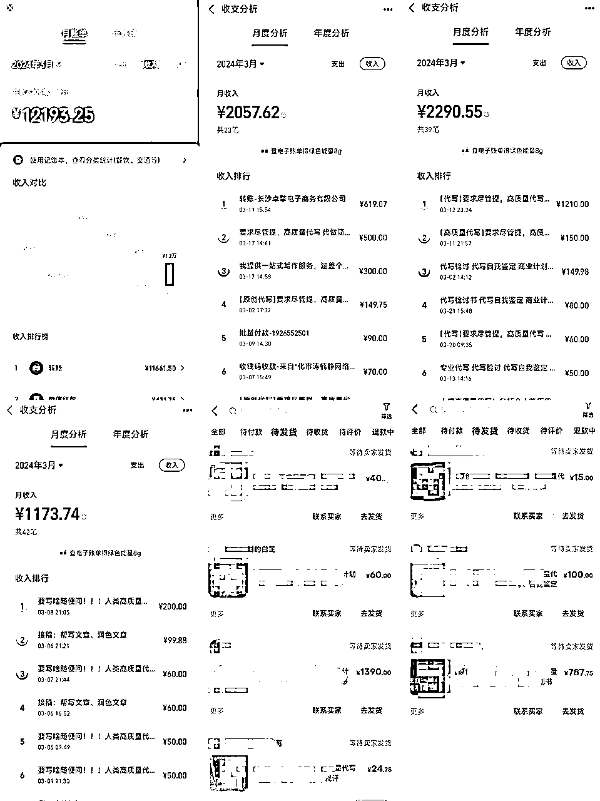
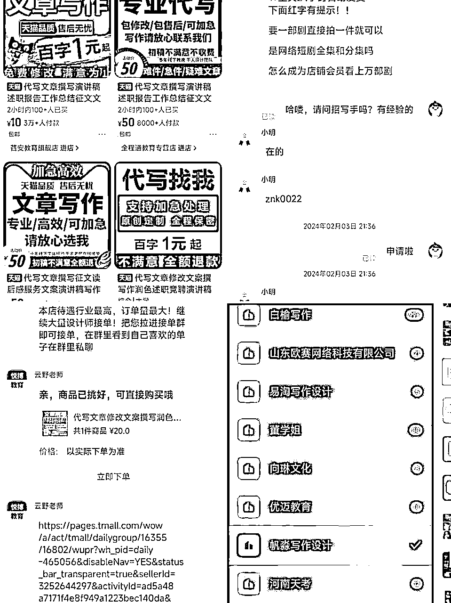
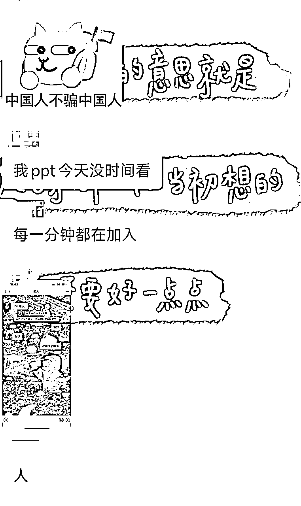
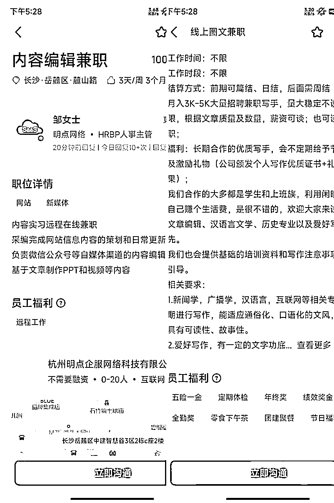

来源：https://riupvml5qjl.feishu.cn/docx/Lk2tdmwP6oD24KxlOWEcxV5qnlb
加入生财满打满算一年啦，这一年总共就发了一个风向标一个帖子，因为总觉得没有什么拿得出手的东西，但没想到自从上周发了条关于AI写作的风向标中标之后，我被很多人夸了，还蛮受宠若惊的。
在上一个帖子中，我讲了下我是如何贷款想扩大生意结果失败，失败之后又拆西墙补东墙，一年就滚到了负债20万，今年过完年下定决心努力还负债，从2月18日开始接了第一单，截止到今天一个月多几天，效果还可以。
说实话每天太忙了，我压根没算过这一个月赚了多少，但是还各种贷款还了1万9，给手底下的主持发工资发了6000，加上自己的房租、社保等等，算下来支出差不多3万，这个月没有逾期，没有拆西墙补东墙，当然身上也没余钱。

看过风向标的圈友就知道我现在主要是在做AI写作，当然这里不是说我靠AI写作赚了3万，但80%肯定是来自AI写作的。自从风向标发布之后，有不少圈友加我表示有兴趣，也有圈友很直接问我，达到这个收入我每天花多少时间，我只能说，AI写作如果是自己接单就是个体力活，我每天除了睡觉时间，其他时间都在忙着接单和写稿子，目前是全职在做的。说是体力活一点不夸张，因为动脑子的东西基本上交给GPT了，剩下的只要去做就能赚钱，赚多赚少看你自己努力了。
AI写作变现有两个方向，一个是接单自己写，另外一个是做中介，接单之后发出去给写手写，自己赚差价。接下来我将给大家详细分享下我做AI写作的历程。
很简单，说白了就是接单，然后用GPT写稿子，再交付就行。所以在这里面，需要搞定的是一个是单子来源，另外一个是写作。
一开始选择这个项目是因为，我每个月都要还负债，需要有稳定的现金流收入才行，而且项目收入可控，意思就是如果我多花时间我就能多赚点，对我来说这点就很nice、而且项目天花板也有。而且学会了AI写作之后，还能写今日头条和公众号爆文，能赚钱的同时又是一个很实用的技能。
目前为止，就我所知道的接单渠道有以下几个
这个就是在淘宝搜索框输入代写，会跳出来很多的写手店，随便点进去，私聊客服，说应聘，他们就会告诉你怎么做，一般来说都是让你帮忙刷一单，然后拉你进接单群，刷单钱会退给你。写手店里面单子很多很多很多，但是单价都偏低。进接单群之后，第一时间看下群公告，一般会写多久结算，碰到那种月结的就早点撤吧，我目前在淘宝写手店接的单都结算了，但是单价真的很低。

QQ群名搜索文章写作等兼职群加进去，也可以接单，这里有个小技巧，如果你想接论文单，可以搜那些民办学校的大学群，注意最好是民办学校的，因为民办学校的学生比较有钱另外就是他们的论文写起来很简单。
闲鱼接单算是我的主战场，自从我在闲鱼发布商品之后，就再也没接过写手店的单子了，一个人的身份证可以注册 三个号，也就是一个人可以弄三个闲鱼店铺，我现在总共是三个闲鱼店铺（前面截图可以看到我支付宝的收入来源都是闲鱼写作的，还有不少没点完成的款还没到账），闲鱼接单也很简单，就是上架商品，同行发什么你就发什么，直接搜代写，出来的都是同行，就照着他们的商品图片和文案抄即可。
这里需要注意的是，千万不要想着自己去自创文案，因为你也不知道哪个词就敏感词了，我有个号流量特别好，就是因为我自创了一条文案，号被封了7天，解封之后流量差很多很多。所以千万不要自创文案，直接抄同行的最安全。
闲鱼接单有个好处就是客户都到私域了，还能有回头订单，我有时候一天靠回头订单也能有几百，这还是才做了一个月的积累，多做几个月，相信能更多。

小红书接单也是一个很好的渠道，因为很多人在写稿子之前，会习惯性的去小红书搜资料，所以小红书接单这一块也是不容小觑的，唯一需要注意的就是小红书引流容易封号，相比下来，闲鱼简直不要太过友好。
当然小红书也有引流不封号的办法，就是开聚光灯，甚至能直接在评论区置顶微信号也不违规。
BOSS直聘也是一个接单渠道，很多公司会在上面招文章编辑，一般都是线上的，这时候就可以去应聘接单，这个方式我没自己试过，但我记得之前有个圈友分享过，自己招了个助理专门在BOSS直聘上接单，每个月收入也不少，但是我找不到这个原贴了。
我自己去BOSS直聘上搜索过相关的招聘，确实有还不少。

这一方面星球内有很多很多相关的技术帖了，由于我自己还是个半吊子，就不嫌丑了，有兴趣的圈友可以去搜索一下相关的技术帖。
很多圈友会觉得自己写不好或者怎么样，我觉得我也写得不好，我目前接的都是小单子，读后感、演讲稿等等这些，几十块钱一篇，但是GPT写起来很简单，不费劲。AI写作也有高单价的，比如说论文，论文一篇几百，高的几千
论文接单是真的香，截止目前我接了4篇论文，最低一篇也有600多，而且我接的论文单，最后都是不是自己写的，是用的成稿。比如说我前几天接了个800的论文单，写跨境电商公司的精准营销策略，接单之后，我去成稿网站上搜了一下，找到一篇成稿，买下来花了20，然后看了下内容，按照客户要求加了点内容，接着花了50块钱找人帮我弄了下论文格式，交给客户就完事了，前后我花的时间不到1小时，总共花了70块钱+不到一小时的时间，到手800块。
做了一个月了，这个月终于没有再拆西墙补东墙，再坚持坚持，不出意外今年就可以清负债了。这一个月真的还蛮累的，除了睡觉，基本上就是在写稿子，在回消息，很累很累，很容易倦怠期，但是赚钱真的容易上瘾，尤其是身边人都在努力赚钱的时候，每次和新认识的圈友互相分享今天收入多少的时候，我就觉得自己又可以了，甚至我还找到了几个病友，都是负债的人，一起互相打气。每天睁眼就是稿子，就是消息，也很充实，根本没时间去emo了，每天都沉迷于赚钱，真的不要太快乐。
有相同的“病友”欢迎一起互相交流病情一下呀~希望多来几个日收入高的，每天和我分享赚了多少刺激刺激我